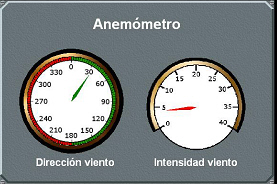

Anemómetro
El Anemómetro muestra continuamente al operador los valores de Dirección y Velocidad del Viento en el punto en el que se encuentra la unidad controlada.

Contiene los siguientes elementos:
- Indicador de Dirección del Viento: indicador analógico de giro continuo que muestra la dirección del viento relativa a la posición y movimiento de la unidad controlada.
- Indicador de Velocidad del Viento: indicador analógico de 240º, con una escala de 0 a 40 nudos que muestra la velocidad del viento relativa a la posición y movimiento de la unidad controlada.